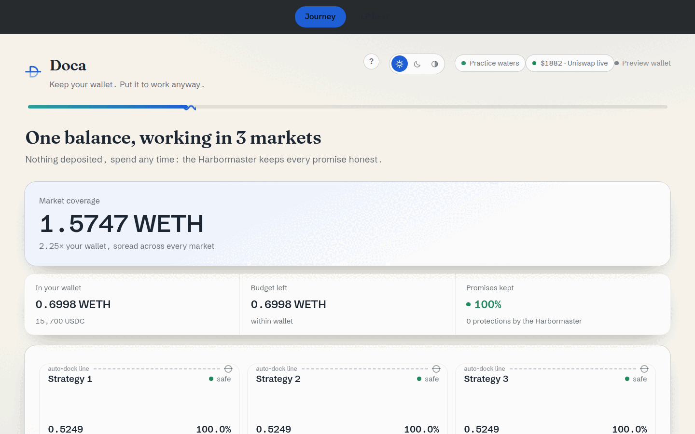

Keep your wallet.
Put it to work anyway.
Non-custodial market making on 1inch Aqua: one balance, several strategies at once. No upfront deposit. Tokens move only when a trade settles.
Budgets are the waterline: a strategy riding low gets docked and re-shipped to what the wallet actually holds.
One balance. Several markets.
Aqua lets the same wallet support more than one strategy without depositing into isolated pools. Doca adds the budget that keeps those promises honest.
Virtual liquidity can outlive real inventory.
Under directional flow, strategies can continue quoting after wallet capacity has changed.
The price defends the scarce side.
Doca raises the surcharge as outgoing inventory consumes its budget. The direction that refills it stays inexpensive.
When the wallet changes, the map redraws.
The Harbormaster docks the stale strategy and prepares a safer allocation against what the wallet holds now.
Adjacent evidence: 85% of tracked concentrated liquidity ($1.6B of $1.84B analyzed) sat underutilized through H1 2026, most of it in individually managed positions on Uniswap v3, per 1inch-commissioned Dune research.
A promise may exceed your wallet.
A budget may not.
43
failed attempts, unmanaged
0
with Doca
Same wallet. Same flow.
At 4× amplification in our paired experiment.
43 of 86 attempted fills reverted, unmanaged · contracts/scripts/amplification-experiment.tsAnd +29% inventory retained under identical flow, against the same wallet left unmanaged.
30 fills, paired control · contracts/scripts/waterline-scenario.tsThe harbor, live.
Not a mockup. This is the app running against a Base fork, three strategies shipped, each riding its own load line.

Three layers, one flow.
Holds strategy commitments. Settlement runs through 1inch's official, unmodified contracts.
Executes the pricing program that every quote runs through on-chain.
Prices depletion against each budget and manages the strategy lifecycle.
InventorySkewProvider plugs into SwapVM's stock fee opcode: flat while a strategy's budget is healthy, quadratic as it drains. The Harbormaster docks and re-ships before underfunding turns into persistent failed quotes.
Your agents can read the harbor too.
The repo ships a read-only MCP server. An agent calls one tool to discover a maker's live strategies straight from chain logs, then reads budgets, surcharge and the health check, without ever holding a key.
It points at a node you run, the demo fork or your own. There is no hosted endpoint.
Read the agent surface docsgit clone https://github.com/ottodevs/doca
cd doca && bun mcp/server.ts{
"mcpServers": {
"doca": {
"url": "http://127.0.0.1:8420/mcp",
"transport": "http"
}
}
}Common questions
What is Doca?
Doca is a budget layer for 1inch Aqua. Aqua lets one wallet back several trading strategies at once by shipping promises instead of deposits: a promise can outrun what you actually hold, by design. Doca adds the missing check. Every strategy carries a budget of what it is allowed to consume, sized against what the wallet really holds, and Doca repairs allocations off-chain before underfunding turns into persistent failed quotes.
Is my money locked?
No. Nothing is ever deposited. Aqua only moves tokens straight out of your wallet during a fill, and you can spend from that same wallet without withdrawing anything first: Doca detects the balance change and resizes your strategies around it. There's nothing to withdraw, because there was never a custody step to begin with.
What happens if my wallet balance changes?
The Harbormaster notices. It watches every strategy you've shipped, and when one's budget runs low it docks the promise and re-ships it against what your wallet actually holds now, the same fix Aqua's own whitepaper recommends doing by hand. In this demo a local signer lets it act on its own, on camera; with your own connected wallet, today it prompts you to sign, the same as any other transaction.
Is this a business or a public good?
The budget primitive is open by design: any Aqua maker should have it. The product is what gets built on top of it: the desk, the agent, and credit next.
Is it only for 1inch Aqua?
Aqua-native today, by design: the fee provider plugs into SwapVM's own opcode, and every settling transaction runs through 1inch's official, unmodified contracts. The idea underneath, a budget sized against what the wallet actually holds, isn't Aqua-specific, and credit is the clearest place it generalizes next.
What about lending?
A budget already behaves like a line of credit: permission to spend against a real balance, with value pulled out when risk rises. Lending on Aqua would split into two honest halves: a non-custodial lender side using exactly this primitive, and an overcollateralized borrower side settled through escrow. The mechanism is designed and the primitive it needs is already live.
Is it live on mainnet?
Yes. Our contracts are deployed on Base mainnet, wired to 1inch's canonical Aqua registry: InventorySkewProvider and DocaApp. Both are source-verified with an exact bytecode match on Sourcify. The demo you're watching runs on a fork of that same chain, so every transfer is a real ERC-20 movement against the real token contracts, without spending real funds.
Can agents integrate?
Yes, see Your agents can read the harbor too above: a read-only MCP server, no key required.